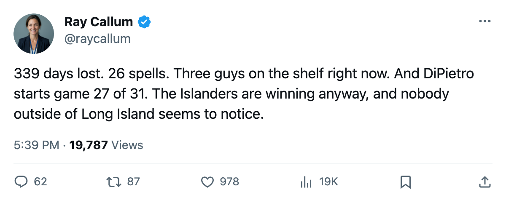

WSH
WSHThe Infirmary: The Islanders Have Lost 339 Days to Injury, the Most in the League, and They Just Won 9 of 10
26 spells, 4 men on the shelf right now, and a 5-game streak powered by a goaltender who has started 87 percent of the games
 Ray CallumSenior correspondent · Home Ice Network
Ray CallumSenior correspondent · Home Ice Network
 New York Islanders has lost 339 days to injury this season. No club in the league has lost more. The second place is
New York Islanders has lost 339 days to injury this season. No club in the league has lost more. The second place is  Phoenix Coyotes at 253. The Islanders have sent 26 different men to the injured list across the season. They are on a 5-game win streak.
Phoenix Coyotes at 253. The Islanders have sent 26 different men to the injured list across the season. They are on a 5-game win streak.
The last 10 games: 9 wins, 1 loss, 33 goals for, 24 against. The record reads 18-1-9-3 with 41 points, 5th in the Eastern Conference. At home they are 12-5. On the road, 7-7.
 Rick DiPietro86 has started 27 of 31. His share of starts is 87 percent, the highest in the league alongside
Rick DiPietro86 has started 27 of 31. His share of starts is 87 percent, the highest in the league alongside  Roman Cechmanek88 of
Roman Cechmanek88 of  Los Angeles Kings.
Los Angeles Kings.  Garth Snow80 has started 7. DiPietro's workload is fine. The question is who's in front of him, and that answer keeps shifting.
Garth Snow80 has started 7. DiPietro's workload is fine. The question is who's in front of him, and that answer keeps shifting.
Three men are on the shelf today:  Oleg Kvasha79 (foot, back Jan 5),
Oleg Kvasha79 (foot, back Jan 5),  Shawn Bates76 (hand, back Dec 25), and
Shawn Bates76 (hand, back Dec 25), and  Radek Martinek72 (elbow, back Dec 21). Bates went down between Dec 17 and Dec 19, a 3rd injury spell this season. The first two went unnamed; this one carries the league's hand designation.
Radek Martinek72 (elbow, back Dec 21). Bates went down between Dec 17 and Dec 19, a 3rd injury spell this season. The first two went unnamed; this one carries the league's hand designation.
The depth chart keeps moving
Robidas went down twice (elbow, hip). Peca twice. Hamrlik twice. Bates three times. DiPietro himself has been listed on the injury report twice this season, both times without a named body part, both times returning within days. Yet he has started 27 games.
The Islanders are playing their best hockey of the season with their third-best goaltender situation unavailable, their leading scorer's linemate on the shelf, and a top-pairing defenseman out for another two weeks. The offense has found 33 goals in 10 games anyway.
Washington visits Dec 21. The Capitals are on a 7-game losing streak and 15th in the East with 23 points. The first meeting between these two went to overtime and New York won 4-3. The Islanders are 12-5 at home. Washington is 5-15 on the road.
